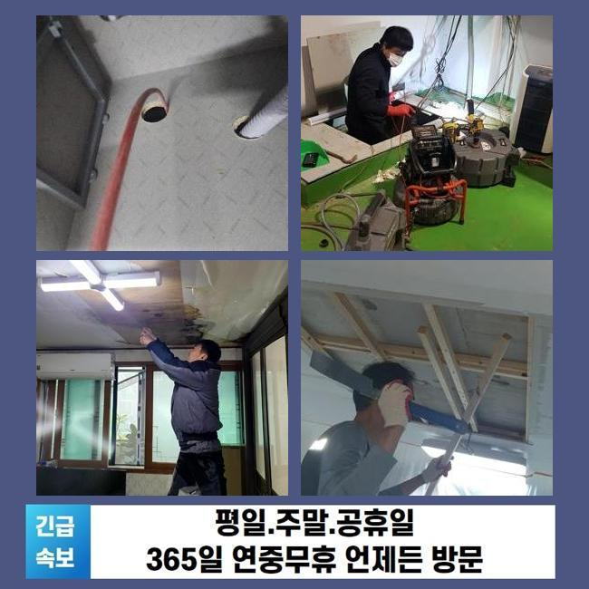
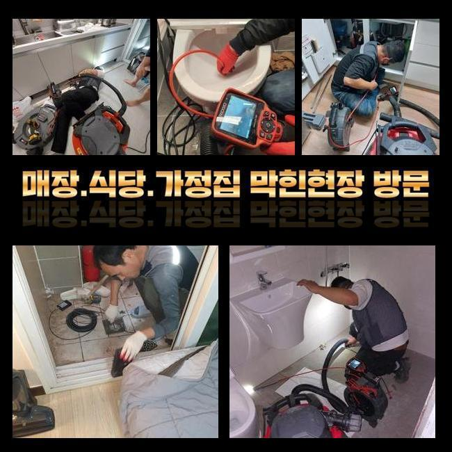
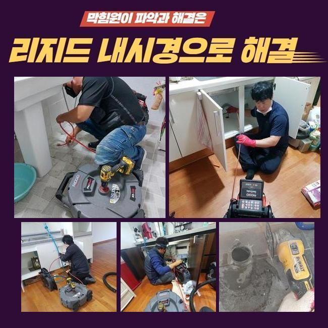
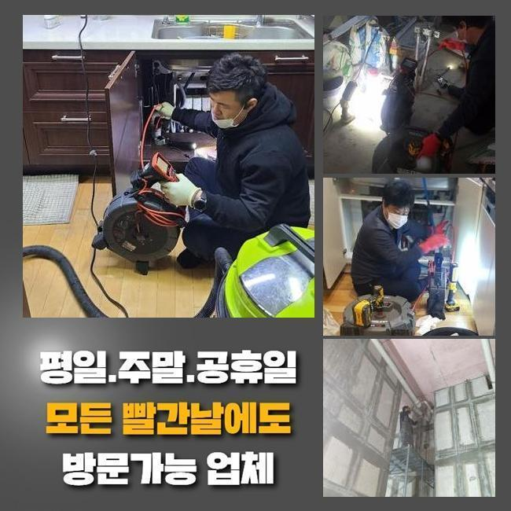
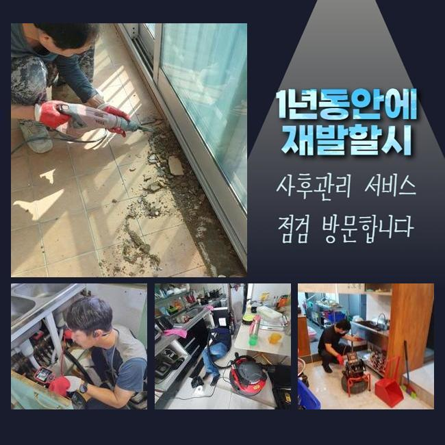
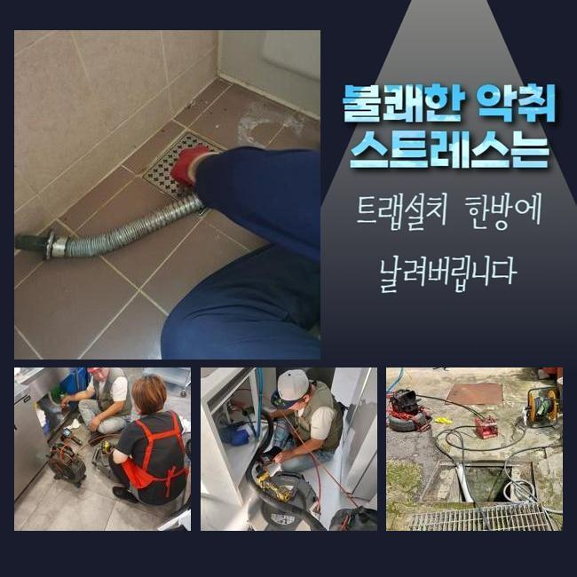

🏠 일산 식사동욕실역류 문봉동 하수구뚫는업체 누수공사
용인 하수구막힘 전문 시공 후기

📋 작업 개요
- 위치: 용인
- 서비스 유형: 하수구막힘, 배관막힘, 누수수리, 역류해결, 뚫는업체, 고압세척, 설비공사
- 작업 일시: 2024. 10. 20. 11:26
- 업체명: 하수구수사대 (010-5615-2118)
🔍 문제 상황
일산 식사동욕실역류 문봉동 하수구뚫는업체 누수공사
갑자기 막히는증상이 일어나기도 하겠지만 대다수는 막힘징조가 나타난후 막힘이 일어나는데요
뚫어내기위해 셀프로 조치하시는데 무리해서 조치하면 도리어 2차증세들로 이어질수가있죠
하수도가막히면 제일먼저 나타나는 증세들을 말씀드리면 물이넘치거나 악취현상 물이정상적으로 흐르지못하는 문제들이있죠
이러한증세는 가정집외에도 다양한사람들이 살고있는 곳도마찬가지로 빈번하게 발생하고 생활함에있어 곤란함들을 초래시킵니다
주요원인을 알려드리면 가정집이나 상가건물같은곳에서 발생되는 다양한 이물질들의 무분별함으로 배출하는것이죠
트랩이나 망같은 제품의경우 막히는현상을 예방해보는데 도움이되지만 이런조치들을 대부분은 실행하지않고있죠
근래저희에게 막힘증세로 인하여 도움을원하셨던 고객분께선 물이흐르지못하는 문제와같이 배관에서 생기는 퀘퀘한악취와 역류현상까지 의뢰주셨습니다

🔎 원인 분석
💡 전문가 진단: 정밀 진단 장비를 사용하여 슬러지의 고착 여부를 판명하고 타격/세척 작업을 실시했습니다.
현장에도착하여 상태파악을 해봤더니 이물질들이 쌓이고쌓여 문제가 발생한것으로 파악되었답니다
문제의증상을 정확하게 알아내려면 배관내시경과같은 기기를사용해 내부체크가 요구되었어요
카메라기기를 활용하여 배관안을 들여다본결과 이물질과 폐기물들이 많은양으로 축적된것을 확인할수있었죠
이렇게축적된 이물의 성질에대해 알아내야하고 파악이완료되면 제일효율적인 작업과정에 대해서 결단할수있어 오염물조사가 선행되었죠
배관을가로막는 근본적인이유는 내부에서발생된 쓰레기들과 오염물인것을 파악해냈죠
제일먼저 오염물을 세척하기위해 전문장비들을 활용해서 제거하는과정을 착수했습니다
석션장비는 배관안의 잔여물을 빨아올리는 역할을 가지고있죠
이것을통하여 하수구안에 잔류하는 수많은 오염물을 빨아올릴수있죠

🔧 작업 과정
그렇지만 하수도안을 깔끔히하는건 한두번의 세척으로는 제거하기란 어려우며 반복작업으로 이물질들을 세세히 소거시켜야했죠
이물질이남겨질 가능성이있어 반복적인 세척과정으로 내부이물을 최대한없애고자 최선을다했어요
세척과정을 끝마친후 카메라를투입해 내부상태가 어떤지 점검해봤어요
쌓여있던 잔해물들이 제거된것을 들여다볼수있었지만 여전히약간의 잔여물이있어 추가로 이물제거가 필요한 상황이었어요
남겨진이물들을 소거시키기위한 추가과정을통해 말끔했던 배관상황으로 돌려놓으려고 심혈을 기울였어요
배수관속에 쌓여있는 이물을효과있게 소거시키고자 강한힘으로 이물질을 빨아올렸어요
강하게 빨아들이니 이전에 상황보다더 원활히 제거되는걸 확인했답니다
단단하게 뭉쳐져있는 석회물질에대해선 석션기만을 사용하는것은 해결하기어려워 고압의 세척장비를 사용해서 강력하게 압력적용을 하는것이 적합하다고 판단할수있었죠
연속적으로 세척작업을 진행하니 더이상이물이 흡입되지않는걸 파악하고나서 하수구촬영기로 배관안에 남아있던 오염물이 전혀없는걸 최종으로 검수하는 단계들로 넘어가보았죠
내시경을 이용하여 살펴봤던결과 배관안속에서 오염물이 발견되지않았기에 성공적인 작업으로 나타날수있었죠
마무리단계로는 일부의 하수구를 분해했던부분들을 원래대로 복구시키는 작업을해야했죠
복구할때에는 하수관에 파손문제가 생기지않기위해 주의해야해요


✅ 작업 완료
야기되는 막힘증세들은 발견즉시 해결하는게 가장좋고 이것을위해 전문시설을 요구하는 난잡한작업은 전문인을 호출하는것이 제일 효과적이에요
하수구로인해서 곤란함을 느끼고계신다면 시간관계없이 저희들을통해 문의주세요!
1시간안팎으로 어떤지역이든 내방드리며 투명히 작업착수계획들을 안내하고있으니 염려마시길 바랄게요
하수구와 관련하여 궁금한게 있으시면 문의하시면 상세한 응대도울게요



⚠️ 베란다 누수 및 방수 관리 방법
- ✅ 비가 많이 올 때 창틀 주변이나 아래층 천장에 얼룩이 생기는지 정기적으로 확인해 보세요.
- ✅ 우수관 주변 실리콘 마감이 들뜨거나 깨진 틈새가 있는지 손상 여부를 수시로 체크하세요.
- ✅ 베란다 바닥 타일의 줄눈(메지)이 소실되면 그 틈으로 물이 침투하여 누수가 유발됩니다.
- ✅ 누수 의심 증상 발견 시 방치하면 아래층 손실이 커지므로 즉시 전문가의 진단을 받으십시오.
💡 핵심 정리
- 확실한 장비 작업(내시경 점검 및 샤프트 스케일링)으로 원인을 뿌리 뽑습니다.
- 작업 후 1년 이내에 동일한 부위 재발 시 100% 무상 A/S 서비스를 보장합니다.
- 서울 · 경기 · 인천 전 지역에 24시간 언제든 긴급 출동할 수 있도록 항시 대기 중입니다.
❓ 자주 묻는 질문 (FAQ)
🚨 용인 하수구막힘 문제로 고민이신가요?
정확한 원인 진단과 확실한 시공으로 재발 없는 해결을 약속드립니다.
24시간 긴급 출동 | 서울 · 경기 · 인천 전지역 | 1년 내 재발 시 무상 A/S